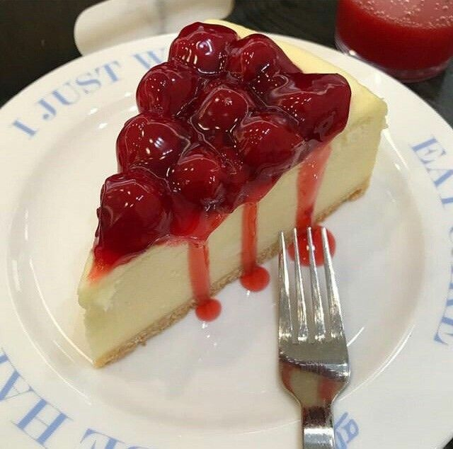

Cheesecake c:
El mejor cheesecake que probaras en tu vida
"Advertencia: su tiempo de preparacion es de 5 hrs y 15 mins, pero su sabor persistira en tu mente y corazon para siempre c: "
Ingredientes
- Huevos -----------------> 3 enteros
- Extracto de vainilla -----------------> 2 cucharaditas
- Crema acida -----------------> 1 taza
- Queso Crema -----------------> 3 paquetes de queso crema
- Azucar -----------------> 1 y 1/4 de taza
- Mantequilla derritida -----------------> 1/3 de taza
- Relleno de fresa de pay -----------------> 1 lata
- Galleta en trozos -----------------> 1 y 3/4 de taza
Instrucciones
- Mezcle en un bowl, los trozos de galleta de tu preferencia, la mantequilla derretida y parte del azucar. Con la punta de los dedos, presiona la mezcla en el fondo de un molde desmontable.
- Batir el queso crema y el azucar hasta que quede suave. Incorporar la crema agria y la vainilla. Incorpore los huevos de uno en uno a velocidad baja. Vierta el relleno sobre la corteza.
- Hornear la tarta de queso en el horno precalentado hasta que el relleno este casi cuajado. Pase un cuchillo por el borde para aflojar los lados y deje que se enfrie antes de sacarla del molde. Refrigere la tarta de queso durante al menos cuatro horas antes de servirla.
- Las tartas de queso deben conservarse siempre en el frigorifico y nunca a temperatura ambiente.
Tips y recomendaciones
No deje nunca la tarta de queso en la encimera mas de dos horas. Las bacterias creceran a temperatura ambiente, con el consiguiente riesgo de intoxicacion alimentaria.
Si, se puede congelar la tarta de queso. Dejela reposar en el frigorifico y, a continuacion, envuelvala bien en papel de aluminio. Pongale una capa de papel de aluminio para protegerla mejor de las quemaduras del congelador. Congelela hasta dos meses. Descongelela en el frigorifico durante la noche.
